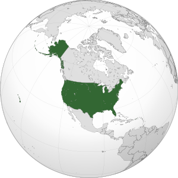
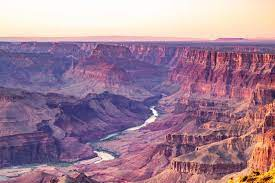

В 1507 году немецкий картограф Мартин Вальдзеемюллер издал карту мира, на которой земли Западного полушария были названы Америкой в честь итальянского исследователя и картографа Америго Веспуччи, это было первое использование топонима «Америка»[19].Первым документально подтверждённым использованием названия «Соединённые Штаты Америки» является письмо от 2 января 1776 года, написанное Стивеном Мойленом, помощником Джорджа Вашингтона. Обращаясь в письме к подполковнику Джозефу Риду[en], Мойлен выразил пожелание нести «полные и достаточные полномочия Соединённых Штатов Америки» в Испанию для оказания помощи в революционной войне[20][21][22].
Соединённые Штаты Америки были образованы в 1776 году при объединении тринадцати британских колоний, объявивших о своей независимости. Война за независимость США продолжалась до 1783 года и окончилась победой колонистов. В 1787 году была принята Конституция США, а в 1791 — Билль о правах, который существенно ограничил полномочия правительства в отношении граждан. В 1861 году противоречия между рабовладельческими южными и промышленными северными штатами привели к началу четырёхлетней Гражданской войны. Следствием победы северных штатов стал повсеместный запрет рабства, а также объединение страны после раскола, возникшего при объединении южных штатов в Конфедерацию и объявлении её независимости от Вашингтона.Вплоть до Первой мировой войны официальная внешнеполитическая активность США частично ограничивалась интересами на территориях Северной, Центральной и Южной Америки согласно сформулированной ещё в 1823 году доктрине Монро. После Первой мировой войны Конгресс Соединённых Штатов не давал согласия на вступление страны в международные организации (например, в Лигу Наций и Палату международного правосудия при ней), что ограничивало роль США в мировой политике. Однако участие страны в антигитлеровской коалиции значительно усилило влияние США на мировой арене, и с середины XX века страна стала ядром т. н. «Первого мира». В 1945 году США стали первой ядерной державой и первой и единственной страной, использовавшей ядерное оружие в военных действиях (атомные бомбардировки Хиросимы и Нагасаки). С 1946 года США находились в состоянии глобального противостояния с СССР, длившегося до начала 1990-х годов, когда Советский Союз прекратил своё существование.
Основная территория США (называемая континентальные штаты) расположена на Североамериканском континенте и простирается от Атлантического океана на востоке до Тихого океана на западе. На юге США граничат с Мексикой, на севере — с Канадой. Кроме того, в состав США входят ещё 2 штата. На крайнем северо-западе американского континента находится штат Аляска, также граничащий с Канадой. Граница с Россией проходит через Берингов пролив. В Тихом океане находится штат Гавайи. США также принадлежит ряд островов в Карибском море (например, Пуэрто-Рико) и в Тихом океане (Американское Самоа, Мидуэй, Гуам и другие).

Под тем или иным управлением США находится (но не входит в них) ряд островных территорий, имеющих различный статус. На территории необитаемого атолла Пальмира полностью действует Конституция США. Остальные территории имеют собственное основное законодательство. Крупнейшей из таких территорий является Пуэрто-Рико.Территории США:
На основной территории страны к западу от Приатлантической низменности протянулись Аппалачские горы, за которыми располагаются Центральные равнины (200—500 м над уровнем океана), плато Великие равнины (600—1500 м). Почти весь запад занят горной системой Кордильер.Гранд-Каньон уникальное природное явление, огромнейший каньон, глубина порядка 1,8 км, длинна 446 км.
Так как страна расположена на большой территории, в ней представлены практически все климатические зоны — от арктического климата на севере Аляски до тропического в штате Гавайи и на юге Флориды.
Недра богаты запасами различных природных ископаемых, в том числе — каменный и бурый уголь, железная и марганцевая руда. Кордильеры, плато Колорадо, Великие равнины и Примексиканская низменность обладают месторождениями медных, цинковых, свинцовых, серебряных, хромитовых, ванадиевых, вольфрамовых, молибденовых, титановых, полиметаллических, урановых и ртутных руд, а также золота, серы, фосфатов и другого химического сырья.Реки, образовавшие глубокие каньоны, относятся к бассейнам водных источников, впадающих в Тихий океан. Миссисипи (с притоком Миссури) — одна из самых длинных речных систем планеты — протянулась на 6420 км. На границе с Канадой находятся Великие озёра — Верхнее, Гурон, Мичиган, Эри, Онтарио.

Недра богаты запасами различных природных ископаемых, в частности — каменный и бурый уголь, железная и марганцевая руда. Кордильеры, плато Колорадо, Великие равнины и Примексиканская низменность обладают месторождениями медных, цинковых, свинцовых, серебряных, хромитовых, ванадиевых, вольфрамовых, молибденовых, титановых, полиметаллических, урановых, ртутных руд, золота, серы, фосфатов и другого химического сырья.